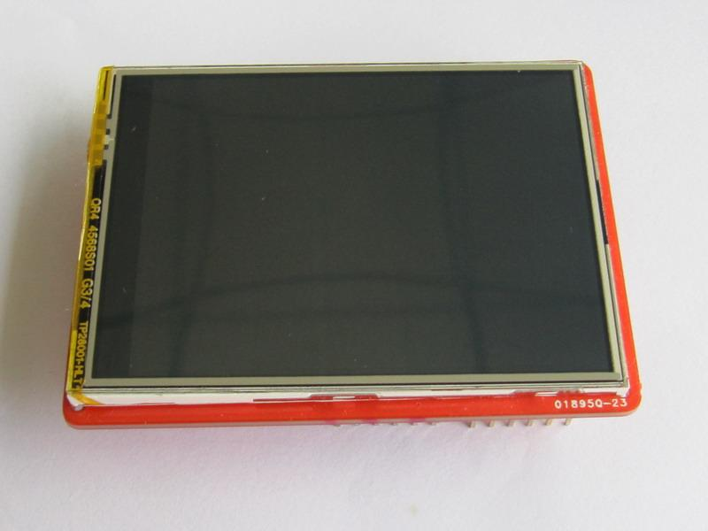
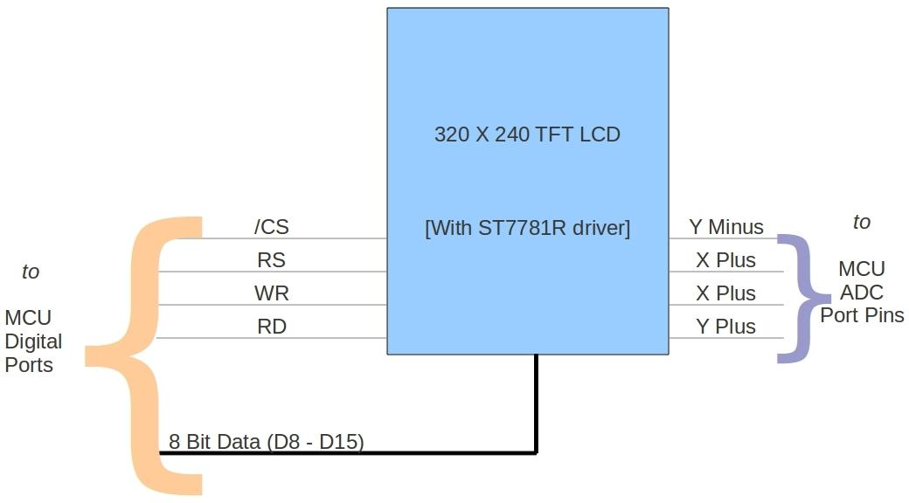
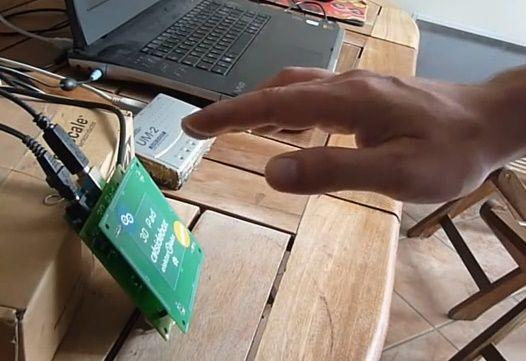

2.8" TFT Touch Shield is an Arduino / Arduino Mega compatible multicolored TFT display with a 4-wire resistive touch screen. It includes an Arduino shield compatible footprint for attachment. The TFT driver is based on professional Driver IC and with 8 bit data and 4 bit control interface.

| Item | Min | Typical | Max | Unit |
|---|---|---|---|---|
| Voltage | 4.5 | 5 | 5.5 | VDC |
| Current | / | / | 250 | mA |
| LCD Panel Size | 2.8 | inch | ||
| View angle | 60~120 | Deg | ||
| Resolution | 320x240 | / | ||
| LCD color | 65k | / | ||
| Backlight Type | LED | / | ||
| LCD driver IC | ST7781R | / | ||
| Interface Type | Parallel port ( 8bit Data + 4bit Control ) | / | ||
| Touch Screen | 4-Wire resistive touch screen | / | ||
| Active area | 43.2*57.3 | mm | ||
| ESD contact discharge | ±4 | KV | ||
| ESD air discharge | ±8 | KV | ||
| Dimension | 72.5x54.7x18 | mm | ||
| Weight | 24±2 | g | ||

D0 - Unused.
D1 - Unused.
D2 - LCD data bit 8.
D3 - LCD data bit 9.
D4 - LCD data bit 10.
D5 - LCD data bit 11.
D6 - LCD data bit 12.
D7 - LCD data bit 13.
D8 - LCD data bit 14.
D9 - LCD data bit 15.
D10 - LCD CS pin, active low.
D11 - LCD RS pin.
D12 - LCD WR pin.
D13 - LCD RD pin.
D14(A0) - Touch Screen Y-.
D15(A1) - Touch Screen X-.
D16(A2) - Touch Screen Y+.
D17(A3) - Touch Screen X+.
D18(A4) - Unused.
D19(A5) - Unused.
The TFT library provides the following Application Programming Interfaces(API). The library makes use of direct access to PORT registers instead of Arduino APIs. This is to increase the speed of communication between MCU and TFT. At present, the library supports Arduino, Arduino Mega (1280 or 2560) and Seeeduino ADK Main Board compatible boards. In Mega the 8bit data port of TFT is distributed to different pins belonging to different ports. This decreases the speed of graphics drawing when compared to Arduino. The choice of port pins are purely based on Arduino / Mega port pin arrangement.
Sets the cursor position to (poX,poY). This function is internally used by other graphics APIs.
Sets the (poX,poY) pixel to color color. This function is internally used by other graphics APIs.
Draws a line from pixel (x0,y0) to pixel (x1,y1) with color color.
Draws a Horizontal Line of length length with color color starting from pixel (poX,poY).
Draws a Vertical Line of length length with color color starting from pixel (poX,poY).
Draws a rectangle starting from (poX,poY) of length length, width width and color color.
Draws a filled rectangle starting from pixel (poX,poY) of length length, width width and color color.
Draws a circle at (poX,poY) of radius radius and color color.
Draws a filled circle at (poX,poY) of radius radius and color color.
Draws a character starting from (poX,poY) using inbuilt font of size size and with color fgcolor. This function is used by drawString() function.
Draws a string of text starting from (poX,poY) using inbuilt font of size size and with color fgcolor.
TFT Touch Shield uses the Adafruit Touch Screen Library. To understand the principle behind resistive touch screen refer External Links. In short, a 4-wire resistive touch screen provides two voltage divider each for X and Y axis. By applying proper voltages for each axis and scanning the ADC values the position of the touch can be detected. These values are always prone to noise. Hence a digital filter is used.
TouchScreen ts = TouchScreen(XP, YP, XM, YM, 300);
Where XP, YP, XM and YM are ADC port pins connected to XPlus, YPlus, XMinus and YMinus pins of Touch Screen. 300 is the resistance across X plates.
Point p = ts.getPoint();
p.x = map(p.x, TS_MINX, TS_MAXX, 240, 0);
p.y = map(p.y, TS_MINY, TS_MAXY, 320, 0);
TS_MINX, TS_MAXX, TS_MINY and TS_MAXY actually decides the extreme ends of the touch screen and actually forms the calibration parameters.
#include <stdint.h> #include <TouchScreen.h> #include <TFT.h> //Measured ADC values for (0,0) and (240-1,320-1) //TS_MINX corresponds to ADC value when X = 0 //TS_MINY corresponds to ADC value when Y = 0 //TS_MAXX corresponds to ADC value when X = 240 -1 //TS_MAXY corresponds to ADC value when Y = 320 -1 static unsigned int TS_MINX, TS_MAXX, TS_MINY, TS_MAXY; //Touch Screen Co-ordinate mapping register static unsigned int MapX1, MapX2, MapY1, MapY2; // For better pressure precision, we need to know the resistance // between X+ and X- Use any multimeter to read it // The 2.8" TFT Touch shield has 300 ohms across the X plate /* Usage: TouchScreen ts = TouchScreen(XP, YP, XM, YM, 300); Where, XP = X plus, YP = Y plus, XM = X minus and YM = Y minus */ //init TouchScreen port pins. This would be reinitialized in setup() based on the hardware detected. TouchScreen ts = TouchScreen(17, A2, A1, 14, 300); void setup(void) { Tft.init();//init TFT initTouchScreenParameters(); //initializes Touch Screen parameters based on the detected TFT Touch Schield hardware //Lines Tft.drawLine(0,0,50,50,RED);//draw a 45degree red line point(0,0) to point(50,50) Tft.drawVerticalLine(25,0,50,GREEN);//draw a vertical green line point(25,0) to point(25,50) Tft.drawHorizontalLine(0,25,50,BLUE);//draw a horizontal blue line point(0,25) to point(50,25) //Rectangle Tft.drawRectangle(50,0,80,50,WHITE);//draw a white rectangle, length=80(X-AXIS), width=50(Y-AXIS) Tft.fillRectangle(0,50,50,80,CYAN);//fill a cyan rectangle, length=50(X-AXIS), width=80(Y-AXIS) //Circle Tft.drawCircle(75,75,25,RED);//draw a red circle, circle centre(75,75) radius=25 Tft.fillCircle(150,100,50,GREEN);//fill a green circle, circle centre(150,100) radius=50 //Text Tft.drawChar('S',0,150,2,RED);//draw a char, start from point(0,150) font size 2(16*16) Tft.drawString("Seeed Studio",8,166,2,GREEN);//draw a char, start from point(8,166) font size 2(16*16) } void loop(void) { // a point object holds x y and z coordinates Point p = ts.getPoint(); p.x = map(p.x, TS_MINX, TS_MAXX, MapX1, MapX2); p.y = map(p.y, TS_MINY, TS_MAXY, MapY1, MapY2); // we have some minimum pressure we consider 'valid' // pressure of 0 means no pressing! if (p.z > ts.pressureThreshhold) { //p.x; //p.y; //p.z; Tft.fillCircle(p.x,p.y,2,GREEN); } } void initTouchScreenParameters() { //This function initializes Touch Screen parameters based on the detected TFT Touch Schield hardware if(Tft.IC_CODE == 0x5408) //SPFD5408A TFT driver based Touchscreen hardware detected { #if defined(__AVR_ATmega1280__) || defined(__AVR_ATmega2560__) ts = TouchScreen(54, A1, A2, 57, 300); //init TouchScreen port pins #else ts = TouchScreen(14, A1, A2, 17, 300); //init TouchScreen port pins #endif //Touchscreen parameters for this hardware TS_MINX = 120; TS_MAXX = 910; TS_MINY = 120; TS_MAXY = 950; MapX1 = 239; MapX2 = 0; MapY1 = 0; MapY2 = 319; } else //ST7781R TFT driver based Touchscreen hardware detected { #if defined(__AVR_ATmega1280__) || defined(__AVR_ATmega2560__) ts = TouchScreen(57, A2, A1, 54, 300); //init TouchScreen port pins #else ts = TouchScreen(17, A2, A1, 14, 300); //init TouchScreen port pins #endif //Touchscreen parameters for this hardware TS_MINX = 140; TS_MAXX = 900; TS_MINY = 120; TS_MAXY = 940; MapX1 = 239; MapX2 = 0; MapY1 = 319; MapY2 = 0; } }
| Revision | Descriptions | Release |
|---|---|---|
| v1.1 | change pictures and demo code combination | 22 November 2011 |
| v1.0 | Use of SPFD5408A based TFT instead of ST7781R driver chip based TFT | 12 September 2011 |
| v0.9b | Initial public release | 24th June 2011 |
Click here to buy: 2.8 TFT Touch Shield
This documentation is licensed under the Creative Commons Attribution-ShareAlike License 3.0 Source code and libraries are licensed under various Open Source licenses. See source code files for details.
It's a pity that we don't have any demo about TFT Touch Shield V1.0 in the Recipe yet.
Post your awesome project about TFT Touch Shield V1.0 to win $100 Coupon! Please feel free to contact us: recipe@seeed.cc
Here we introduce some projects about 3Dpad touchless gesture controller Arduino shield

This demo is a 3Dpad "Air control" MIDI controller make by Dpad touchless gesture controller Arduino shield.
Born with the spirit of making and sharing, that is what we believe makes a maker.
And only because of this, the open source community can be as prosperous as it is today.
It does not matter what you are and what you have made, hacker, maker, artist or engineers.
As long as you start sharing your works with others, you are being part of the open source community and you are making your contributions.
Now share your awesome projects with us on Recipe, and win a chance to become the Core User of Seeed.
Get more information about Core User please email to: recipe@seeed.cc
Copyright (c) 2008-2016 Seeed Development Limited (www.seeedstudio.com / www.seeed.cc)